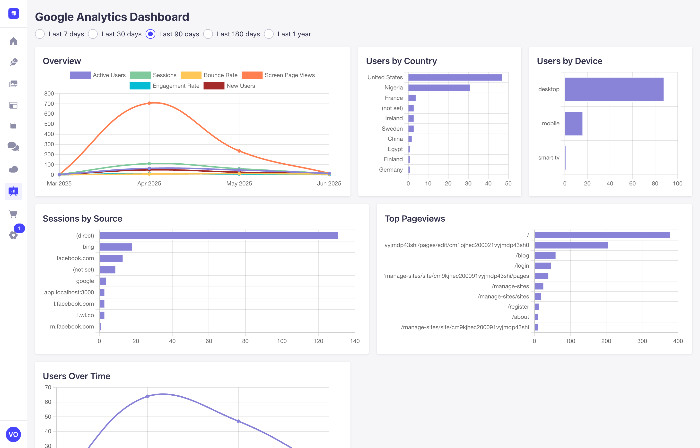
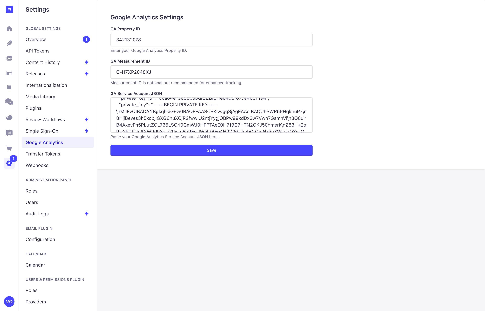

📊 strapi-google-analytics-dashboard
A plug-and-play Google Analytics 4 dashboard for Strapi 5.x. No code required — just install, configure your credentials, and instantly start tracking GA metrics directly in your admin panel.



🚀 Features
- 📈 Overview of key metrics (Active Users, Sessions, Page Views, Bounce Rate, etc)
- 🌍 Users by Country & Device
- 🔗 Top Pageviews
- 🧭 Sessions by Source
- 📆 Date range filters (Last 7/30/90/180/365 days)
- 🎯 Fully responsive and built with Strapi Design System
⚙️ Installation
npm install strapi-google-analytics-dashboard
or
yarn add strapi-google-analytics-dashboard
Then restart your Strapi server.
npx strapi develop
or
npm run develop
or
yarn develop
---
🧩 Usage
- Go to Settings > Google Analytics inside your Strapi Admin panel.
- Paste the following:
- GA Property ID (e.g.,
342132078)
- GA Measurement ID (optional)
- GA Service Account JSON – the service account credentials JSON from Google Cloud.
📌 NOTE: You must have already set up Google Analytics 4 on your frontend app (e.g., with the gtag.js snippet) and collected some traffic.

🔑 How to Get Google Analytics Credentials
- Go to Google Cloud Console.
- Create a new project or select an existing one.
- Enable the Google Analytics Data API.
- Go to APIs & Services > Credentials and:
- Create a Service Account.
- Generate a JSON key for that account (you’ll paste this in the plugin settings).
- Go to your GA4 Admin panel and under Property > Account Settings, add the service account email as a Viewer.
🙌 Contributions
PRs and suggestions welcome! Please open issues for feature requests or bugs.
📄 License
MIT License